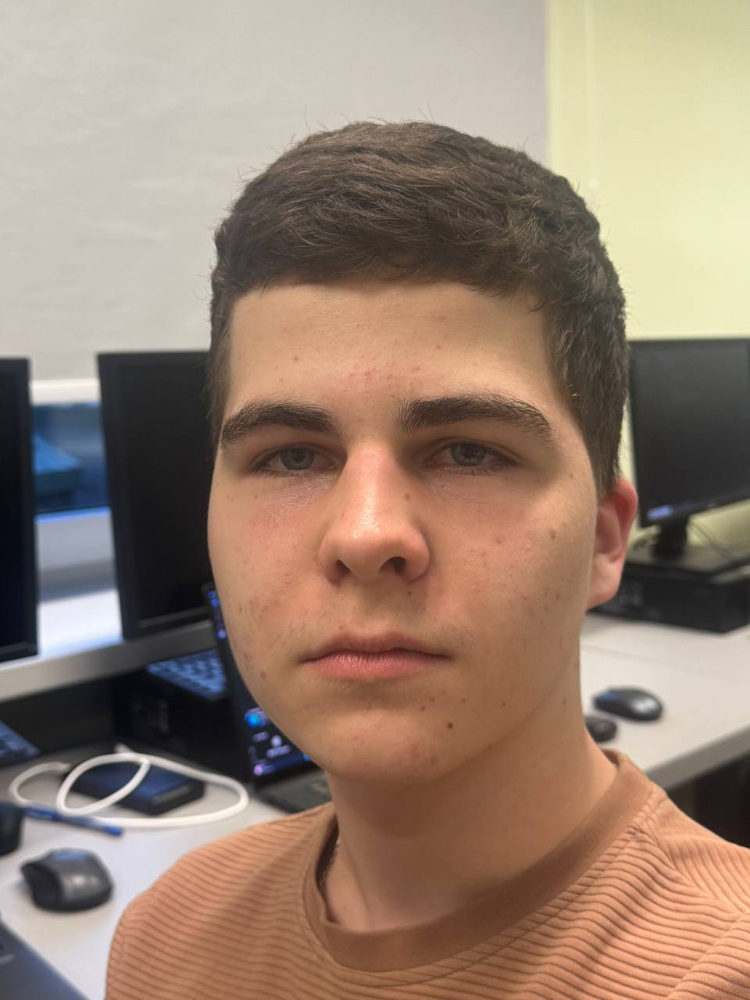

Tworzenie aplikacji WinForms w C#
Kontakt:
Mój e-mail: ahromli1@stu.vistula.edu.pl
Mój numer telefonu: +48 57 64 56 487
Miasto w którym mieszkam: Warszawa
Moje konto GitHub: https://github.com/76981ArtemHromliuk
Moje konto YouTube: https://www.youtube.com/@hromliuk1781
O mnie:

Jestem studentem pierwszego roku na Uniwersytecie Vistula.
Przez cały semestr uczyłem się C#, a także poznałem podstawy MySQL.
Lubię tworzyć aplikacje w języku C# i "eksperymentować" z kodem.
Chętnie chce nauczyć się więcej o Web Dev.
Umiejętności:
- C# - Aplikacje WinForms i konsolowe
- HTML - Wideo, Audio SVG Zdjęcia.
- Python - Python "turtle"
- Git, GitHub
- SQL - MySQL
Doświadczenie:
Tworzenie prostych stron internetowych
Edukacja:
Online Kurs języka Python. - 2022
Akademia Finansów i Biznesu Vistula, Kierunek: Inżynieria Komputerowa. - 2025
Projekty:
- Symulator bankomatu - aplikacja WinForms w C#. Umożliwia wykonywanie operacji takich jak wypłata, wpłata, sprawdzanie salda oraz wybór waluty.
- Symulator automatu vendingowego - aplikacja Winforms w C#. Pozwala na wybór produktów, obsługę płatności oraz wydawanie reszty.